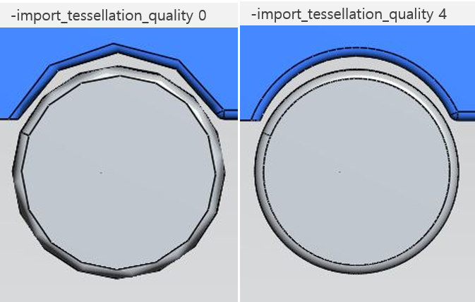
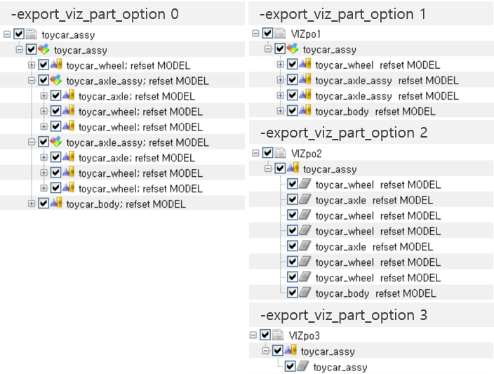
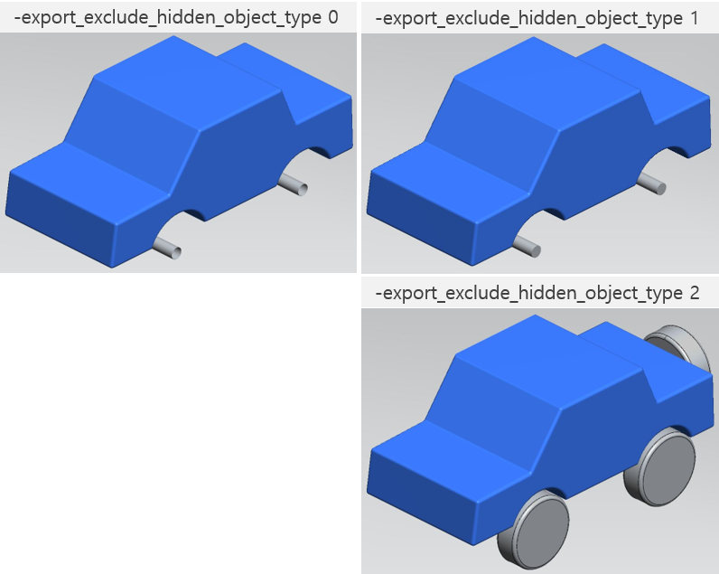
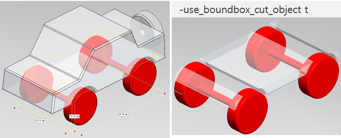

파라미터
VIZPub 콘솔 사용에서 사용 가능한 옵션 파라미터 리스트입니다.
General Option
License
- -lic_server_ip
License Server IP 주소
-lic_server_ip "123.456.7.890"- -lic_server_port
License Server Port 번호
-lic_server_ip 123
Log
- -log
Data Core Log 표시
-log 1Default : 1 (Basic)0
None
1
Basic
2
Detail
3
Information
- -export_logfile
결과 Log XML File
-export_logfile 2Default : 2 (Always)0
None
1
on Error
2
Always
- -export_logfile_path
결과 Log XML File 출력 경로
-export_logfile_path "C:\LOG.xml"
Image (Thumbnail)
- -export_img
미리보기 이미지 추출 유무
-export_img tDefault : t (true)- -img_width
이미지 넓이
-img_width 400Default : 400- -img_height
이미지 높이
-img_height 300Default : 300- -img_dpi
이미지 DPI
-img_dpi 80Default : 80- -img_quality
이미지 해상도
-img_quality 96Default : 96- -img_export_all_node
모든 하위 노드의 이미지 추출
-img_export_all_node tDefault : t (true)- -img_default_view
이미지 추출 시, 기본 View 방향
-img_default_view 0Default : 0 (ISO+)0
ISO+
1
ISO-
2
FRONT
3
BACK
4
LEFT
5
RIGHT
6
TOP
7
BOTTOM
- -img_format
추출 이미지 포맷, OUTPUT EXT로도 지정 가능
-img_format 0" -o "C:\Image.jpg"Default : 0 (JPG)0
JPG
1
PNG
- -img_view_matrix_file_path
추출 이미지 뷰 매트릭스 파일
-img_view_matrix_file_path "C:\View.txt"- -remove_part_of_name
파일 Node별 Image 추출시 ".IAM" ".IPT" ":1.." 제거 여부 설정
-remove_part_of_name fDefault : f (false)
Import Option
Common CAD Import Option
- -import_hidden_entity
Hidden Entity 불러오기 여부
-import_hidden_entity tDefault : t (true)- -import_surpressed_entity
Surpressed Entity 불러오기 여부
-import_surpressed_entity fDefault : f (false)- -import_pmi
PMI 불러오기
-import_pmi tDefault : t (true)- -import_attribute
속성 불러오기 여부
-import_attribute tDefault : t (true)- -import_free_surface
Free Surface 불러오기 여부
-import_free_surface fDefault : f (false)- -import_free_point
Free Point 불러오기 여부
-import_free_point fDefault : f (false)- -import_free_curve
Free Curve 불러오기 여부
-import_free_curve fDefault : f (false)- -import_brep
Brep 불러오기 여부
-import_brep fDefault : f (false)- -create_missing_components
부울 연산 및 이를 나타내는 테셀레이션이 없는 경우 요소의 일반 형식을 표시
-create_missing_components tDefault : f (false)- -create_flexible_components
유연한 구성 요소이고 이를 나타내는 테셀레이션이 없는 경우 요소의 일반 형식을 표시
-create_flexible_components tDefault : f (false)- -use_reference_name
참조 이름 사용 여부
-use_reference_name tDefault : f (false)- -use_debug
디버그 사용 여부
-use_debug tDefault : f (false)- -use_fbx_sdk
FBX SDK 사용 여부
-use_fbx_sdk tDefault : f (false)
CAD Import Option
- -import_tessellation_quality
모델 불러오기 테셀레이션 품질 설정
-import_tessellation_quality 2Default : 2 (Medium)0
Extra Low
1
Low
2
Medium
3
High
4
Extra High
5
User Defined
 - -import_mass_property
Mass Property 사용 여부
-import_mass_property fDefault : f (false)- -import_visible_layer
Visible Layer만 불러오기
-import_visible_layer fDefault : f (false)- -import_healing
Healing 사용 여부
-import_healing fDefault : f (false)- -import_dwg_read_mode_drawing
DWG 읽기 모드 사용 여부
-import_dwg_read_mode_drawing fDefault : f (false)- -import_disassembly_body
쉘 분해 사용 여부
-import_disassembly_body fDefault : f (false)- -import_read_mode
테셀레이션, 지오메트리 읽기 모드 선택
-import_read_mode 1Default : 1 (Brep and Tessellation)0
Brep (Geometry) Only
1
Brep (Geometry) and Tessellation
2
Tessellation Only
- -import_chord_limit
-export_tessellation_quality가 5 (User Defined) 일 때, -export_max_chord_height 대신 -export_chord_height_ratio를 사용
-import_chord_limit fDefault : f (false)- -import_chord_height_ratio
값이 높을수록 더 정확한 테셀레이션이 생성되며 현 높이에 대한 경계 상자의 대각선 길이 비율을 지정
-import_chord_height_ratio 2000Default : 2000 (50 ~ 10,000)- -import_max_chord_height
CAD 파일에 지정된 원래 기하학적 표면과 결과 쪽맞춤 사이의 최대 거리를 지정하며 매우 적은 값은 매우 큰 테셀레이션 파일을 생성할 수 있으므로 주의 필요.
반대로 매우 큰 값은 부정확한 테셀레이션을 생성할 수 있으며, 이 경우에는 -import_chord_height_ratio을 사용하여 테셀레이션되는 개체에 상대적으로 이 값의 크기를 조정하는 것이 나을 수 있음.
-import_chord_limit가 true로 설정되지 않은 경우 -import_max_chord_height은 무시됨.
-import_max_chord_height 1Default : 1- -import_angle_tolerance
두 연속 세그먼트 사이의 최대 각도 설정
-import_angle_tolerance 20Default : 20 (10 ~ 40)- -import_solid
솔리드 불러오기 여부
-import_solid tDefault : t (true)- -import_wireframe
와이어 프레임 불러오기 여부
-import_wireframe fDefault : t (true)- -import_active_filter
Active Filter 또는 Active Layer에 저장된 데이터만 불러오기 여부
-import_active_filter fDefault : t (true)- -import_split_surface_model
여러 개의 열린 쉘이 있는 쉘 기반 Surface 모델을 여러 바디로 분할 여부
-import_split_surface_model fDefault : t (true)- -import_keep_parasolid_entity
Parasolid에 다시 쓸 때 구문이 분석된 데이터 유지 여부
-import_keep_parasolid_entity fDefault : f (false)- -use_global_unit
불러오기 시, 글로벌 유닛 사용 여부
-use_global_unit fDefault : t (true)- -import_feature_tree
Feature Tree 사용 여부, 읽기 모드가 Tessellation일 때만 사용 가능
-import_feature_tree fDefault : f (false)- -import_construction_reference
평면 및 축과 같은 구성 요소 불러오기 여부
-import_construction_reference fDefault : f (false)- -import_construction_reference_log
평면 및 축과 같은 구성 요소 불러오기 Log
-import_construction_reference_log fDefault : f (false)- -import_curve_and_surface_to_nurbs
곡선, 평면 등을 NURBS로 불러오기 여부
-import_curve_and_surface_to_nurbs fDefault : f (false)- -use_pskernel
불러오기 시, PS Kernel 사용 여부
-use_pskernel fDefault : f (false)
Function Import Option
- -attribute_file_path
속성 파일 경로
-attribute_file_path "C:\ATTRIBUTE.txt"- -import_dgn_quality
불러오기 시, DGN 품질 설정
-import_dgn_quality 0Default : 0 (0 ~ 8)- -remove_node_name_slash
불러오기 시, 노드 이름의 슬래시 (/) 삭제
-remove_node_name_slash fDefault : f (false)- -use_normal_cylindar_side_count
일반 실린더 형상 정밀도 가장자리 개수
-use_normal_cylindar_side_count 12Default : 12 (6 ~ 36)
- -use_small_cylindar_side_count
작은 실린더 형상 정밀도 가장자리 개수
-use_small_cylindar_side_count 6Default : 6 (6 ~ 36)
Export Option
BOM Export Option
- -use_full_structure
BOM XML 전체 구조 정보 추출 여부 설정
-use_full_structure tDefault : f (false)- -create_missing_file_node
Missing File Node 생성 유무 결정
-create_missing_file_node tDefault : f (false)- -reference_cad_file_path
Sub-Assembly 또는 Part가 존재하는 폴더 정의 파일 경로
-reference_cad_file_path "D:\test;D:\test2"
Common Export Option
- -export_edge
내보내기 시, Edge 추출 여부 설정
-export_edge fDefault : f (false)- -export_body_to_part
Body를 Part로 변경하여 내보내기
-export_body_to_part fDefault : f (false)- -export_add_president_id_property
형상의 고유 ID를 속성으로 등록하여 내보내기
-export_add_president_id_property fDefault : f (false)- -use_material
마테리얼 사용 여부
-use_material fDefault : f (false)
CAD Export Option
- -convert_assembly_file_only
Convert Assembly Only
-convert_assembly_file_only fDefault : f (false)- -convert_assembly_file_only_pdm
Convert Assembly Only - PDM
-convert_assembly_file_only_pdm fDefault : f (false)- -export_as_millimeter
현재 모델 단위 대신 밀리미터 단위로 내보내기
-export_as_millimeter fDefault : f (false)- -export_as_binary
바이너리 파일로 내보내기
-export_as_binary fDefault : f (false)- -export_analitics_to_nurbs
원통, 원뿔, 평면 등과 같은 분석 표면을 NURBS 표면으로 내보내기
-export_analitics_to_nurbs fDefault : f (false)- -export_facet_to_wireframe
면 Entity를 와이어 프레임으로 내보내기
-export_facet_to_wireframe fDefault : f (false)- -export_solid_as_faces
솔리드를 면으로 내보내기
-export_solid_as_faces fDefault : f (false)- -export_hidden_object
숨겨진 오브젝트 내보내기
-export_hidden_object fDefault : f (false)- -export_tessellation
테셀레이션 형식으로 내보내기
-export_tessellation fDefault : f (false)- -export_write_mode
지오메트리 / 테셀레이션 쓰기 모드 선택하여 내보내기
-export_write_mode 0Default : 0 (Brep (Geometry) Only)0
Brep (Geometry) Only
1
Brep (Geometry) and Tessellation
2
Tessellation Only
- -export_file_version
파일 버전을 설정하여 내보내기
-export_file_version 0Default : 0 (JT 81 or STEP 203 or U3D 363v1)0
JT 81
STEP 203
U3D ECMA-363 v.1
1
JT 95
STEP 214
U3D ECMA-363 v.3
2
JT 100
STEP 242
- -export_pmi
PMI 내보내기
-export_pmi fDefault : f (false)- -use_short_name
Entity 이름을 줄여 파일 크기를 줄여 내보내기
-use_short_name fDefault : f (false)- -export_tessellation_quality
테셀레이션 품질을 설정하여 내보내기
-export_tessellation_quality 2Default : 2 (Medium)0
Extra Low
1
Low
2
Medium
3
High
4
Extra High
5
User Defined
- -export_chord_limit
-export_tessellation_quality가 5 (User Defined) 일 때, -export_max_chord_height 대신 -export_chord_height_ratio를 사용
-export_chord_limit fDefault : f (false)- -export_chord_height_ratio
값이 높을수록 더 정확한 테셀레이션이 생성되며 현 높이에 대한 경계 상자의 대각선 길이 비율을 지정
-export_chord_height_ratio 50Default : 50 (50 ~ 10,000)- -export_max_chord_height
CAD 파일에 지정된 원래 기하학적 표면과 결과 쪽맞춤 사이의 최대 거리를 지정하며 매우 적은 값은 매우 큰 테셀레이션 파일을 생성할 수 있으므로 주의 필요.
반대로 매우 큰 값은 부정확한 테셀레이션을 생성할 수 있으며, 이 경우에는 -import_chord_height_ratio을 사용하여 테셀레이션되는 개체에 상대적으로 이 값의 크기를 조정하는 것이 나을 수 있음.
-import_chord_limit가 true로 설정되지 않은 경우 -import_max_chord_height은 무시됨.
-export_max_chord_height 1Default : 1- -export_angle_tolerance
두 연속 세그먼트 사이의 최대 각도를 설정하여 내보내기
-export_angle_tolerance 10Default : 10 (10 ~ 40)- -export_keep_current_tessellation
TRUE 이면 Brep의 이러한 테셀레이션을 유지하고 그렇지 않으면 -export_tessellation을 사용하여 BRep를 다시 테셀레이션하여 내보내기
-export_keep_current_tessellation fDefault : f (false)- -export_accurate_tessellation
표준 매개변수를 사용하는 정확한 테셀레이션. TRUE일 경우, 분석에 더 적합한 테셀레이션이 생성되어 내보내기
-export_accurate_tessellation fDefault : f (false)- -export_mesh_quality
테셀레이션 압축 유무 설정
-export_mesh_quality fDefault : f (false)- -export_mesh_quality_value
테셀레이션 압축 레벨
-export_mesh_quality_value 0Default : 0 (0, 100)- -texture_path
텍스처를 내보낼 폴더를 선택하며, 경로가 없는 경우, FBX와 동일한 경로에 내보내기
-texture_path "C:\TEXTURE_FOLDER"- -export_as_ascii
ASCII 형식으로 내보내기
-export_as_ascii fDefault : f (false)- -export_structure_almost_same_in_parasolid
원래 소프트웨어에 있었던 방식에 가깝게 Parasolid 어셈블리 트리를 구축하여 내보내기
Body 이름은 여러 어셈블리 레벨의 연결이며 Parasolid 원래 이름과 일지하지 않을 수 있음
-export_structure_almost_same_in_parasolid fDefault : f (false)- -export_explode_multi_body
다중 연결된 Brep을 여러 Body로 분해하여 내보내기
-export_explode_multi_body fDefault : f (false)- -create_points_with_coordinate_system
좌표계를 점으로 내보내기 (Parasolid 형식에는 이에 상응하는 형식이 없음)
-create_points_with_coordinate_system fDefault : f (false)
VIZ Export Option
- -export_viz_version
VIZ 파일 버전 설정
-export_viz_version 303Default : 303204
VIZ v.204
208
VIZ v.208
303
VIZ v.303
304
VIZ v.304
- -export_viz_type
VIZ 파일 타입 설정
-export_viz_type 0Default : 0 (VIZ)0
VIZ
1
VIZM (Mobile)
2
VIZW (Web)
- -export_viz_with_product_info
VIZ를 저장한 제품 명, 제품 버전 정보 저장 여부 (VIZ 304~)
-export_viz_with_product_info fDefault : f (false)- -export_viz_part_option
VIZ 생성 시, Part 및 Body 생성 방식 설정
-export_viz_part_option 0Default : 0 (기본)0
Default
1
Leaf Assembly to Part
2
One Part Multi Body
3
One Part One Body
 - -export_vizw_mesh_split_save_count
VIZW 메시 블록 Split Save Count 설정
-export_vizw_mesh_split_save_count 0Default : 0- -export_vizw_for_vizwide3d
VIZWide3D용 VIZW 내보내기
-export_vizw_for_vizwide3d fDefault : f (false)- -export_vizw_mesh_viz_flag
VIZWide3D용 VIZW 내보내기 시, Mesh VIZ파일 생성 여부
-export_vizw_mesh_viz_flag fDefault : f (false)- -use_vizw_triangle_max_limit
VIZWide3D 압축 시, Triangle Max Limit 설정
-use_web_assembly F : 50000
-use_web_assembly T : 500000
-use_vizw_triangle_max_limit 0Default : 0- -use_web_assembly
VIZW 압축 사용 여부
-use_web_assembly fDefault : f (false)- -lod_bound_mesh_file_path
LOD Bound Mesh용 옵션 텍스트파일 경로
-lod_bound_mesh_file_path "C:\OPTION.txt"- -export_file_node_type
추출할 파일의 노드 타입을 지정
-export_file_node_type 0Default : 0 (ALL)0
ALL
1
Part
2
Body Only (Except Bodyset)
3
Except Bodyset with Child Body
- -export_file_name_type
추출할 파일의 이름 타입을 지정
-export_file_name_type 0Default : 0 (Node Name)0
Node Name
1
Node ID
2
Node ID + Node Name
- -export_remain_assembly_structure
Export Simplified Model 사용 시, 구조 정보를 그대로 사용할 지 여부 결정 (use_mesh_as_triset이 활성화되었을 때에만 유효)
-export_remain_assembly_structure fDefault : f (false)- -rule_file_path
형상 병합, 노드 분할, 속성 편집 등에서 사용하는 Rule XML 파일 경로
-rule_file_path "C:\RULE.xml"- -hide_filter_object_file_path
Export Simplified Model에서 숨겨둘 오브젝트 이름 지정 텍스트 파일 경로 (export_remain_assembly_structure TRUE일 때에만 유효)
-hide_filter_object_file_path "C:\FILTER.txt"- -export_exclude_hidden_object_type
Export Simplified Model에서 숨겨둘 오브젝트 처리 방식 설정 (export_remain_assembly_structure TRUE일 때에만 유효)
-export_exclude_hidden_object_type 0Default : 0 (Default)0
Default
1
Except Simplify Hidden Object
2
Show Object after Except Simplify Hidden Object
 - -use_mesh_as_triset
Export Simplified Model에서 Mesh 저장 설정
-use_mesh_as_triset 0Default : 0 (Triangle)0
Triangle
1
Triangle Set (Triset)
- -use_limit_triangle
Export Simplified Model에서 Mesh Count 제한 설정
-use_limit_triangle fDefault : f (false)- -use_limit_triangle_count
Export Simplified Model에서 Mesh 크기 설정
-use_limit_triangle_count fDefault : f (false)
Function Export Option
- -export_attribute_add_body_property
Attribute File 생성 시, Body Property 추가
-export_attribute_add_body_property fDefault : f (false)- -export_part_uda_to_body
Part UDA to Body (Name = Geometry)
-export_part_uda_to_body fDefault : f (false)- -use_rotate_x
모델 X방향 회전
-use_rotate_x 0Default : 0- -use_rotate_y
모델 Y방향 회전
-use_rotate_y 0Default : 0- -use_rotate_z
모델 Z방향 회전
-use_rotate_z 0Default : 0- -use_color_r
모델 RGBA색상 Red (0 ~ 255)
-use_color_r 0Default : 0- -use_color_g
모델 RGBA색상 Green (0 ~ 255)
-use_color_g 0Default : 0- -use_color_b
모델 RGBA색상 Blue (0 ~ 255)
-use_color_b 0Default : 0- -use_color_a
모델 RGBA색상 Alpha (0 ~ 255)
-use_color_a 0Default : 0- -color_xml_file_path
모델 색상 변경용 XML 파일
-color_xml_file_path "C:\COLOR.xml"- -use_boundbox_inspection
바운드 박스 점검 사용, Export Simplified Model에서 바운드 박스 좌표를 활용할 경우 사용됨
-use_boundbox_inspection fDefault : f (false)- -use_boundbox_search_option
바운드 박스 경계에 걸친 모델을 내보내기 여부
-use_boundbox_search_option 0Default : 0 (Object in Bound Box)0
Object in Bound Box
1
Object across Bound Box

- -use_boundbox_min_x
바운드 박스 최소점 X 좌표
-use_boundbox_min_x 0Default : 0- -use_boundbox_min_y
바운드 박스 최소점 Y 좌표
-use_boundbox_min_y 0Default : 0- -use_boundbox_min_z
바운드 박스 최소점 Z 좌표
-use_boundbox_min_z 0Default : 0- -use_boundbox_max_x
바운드 박스 최대점 X 좌표
-use_boundbox_max_x 0Default : 0- -use_boundbox_max_y
바운드 박스 최대점 Y 좌표
-use_boundbox_max_y 0Default : 0- -use_boundbox_max_z
바운드 박스 최대점 Z 좌표
-use_boundbox_max_z 0Default : 0- -boundbox_xml_file_path
바운드 박스 정보 XML 파일 경로
-boundbox_xml_file_path "C:\BBOX.xml"- -use_boundbox_cut_object
바운드 박스 경계에 걸친 오브젝트 잘라내기 여부
-use_boundbox_cut_object fDefault : f (false) - -export_remain_structure_boundbox
바운드 박스를 활용한 기능 사용 시, 기존 모델 구조 유지 여부 (형상X)
-export_remain_structure_boundbox fDefault : f (false)- -use_plane_axis_direction
-use_boundbox_cut_object 사용 시, 오브젝트를 자를 단면 방향 설정
-use_plane_axis_direction 0Default : 0 (X axis)0
X axis
1
Y axis
2
Z axis